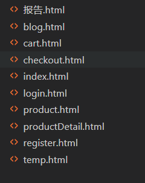
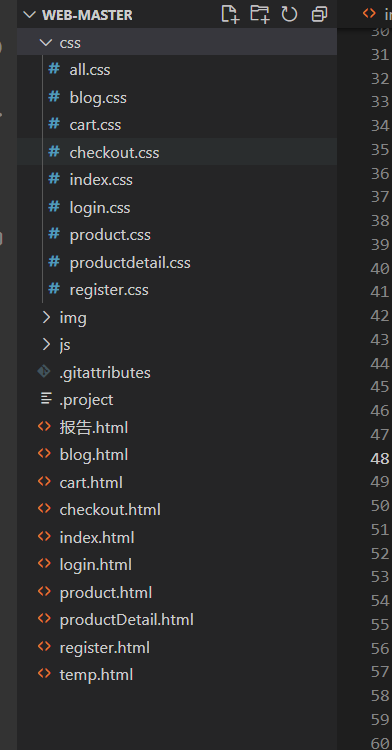
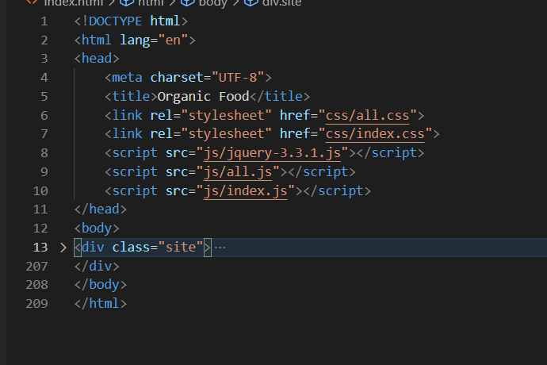
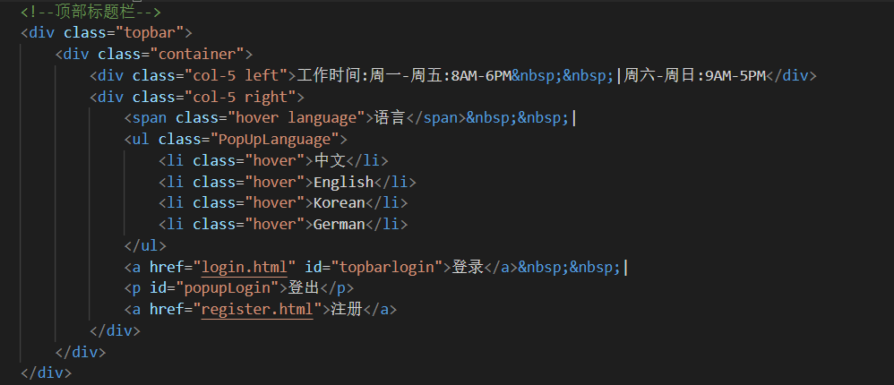
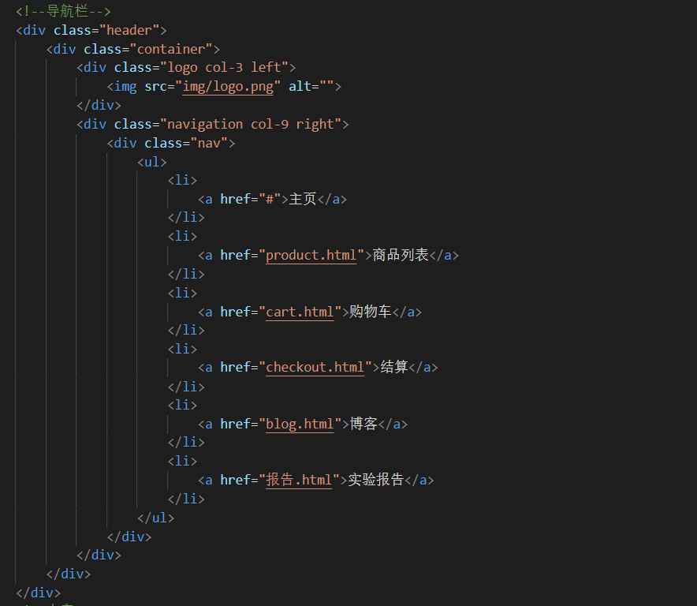

《Web应用基础》课程结业报告
1. 实验内容
1.1 做的什么
此次结业大作业，我做的是一个有机食品购物网页，在网页中可以对已有的商品加购然后购买。网页中还可以查到有机食品的简介和作用。
1.2 页面的设计
该网页共有9个页面，具体如下：

2. 具体实现
2.1 环境的搭建和准备
建立所需的文件夹和文件，目录如下图所示：

其中，HTML文件中`index.html`是主页文件，其它则是对应副页的文件；CSS文件中，`index.css`是主页的文件，其它则是相应的副页文件；img文件家中有网页中需要用到的图片；js文件夹则是相应js文件。
2.2 页面布局
index主页面
基本框架如下：

顶部标题：

导航栏：

3. 遇到的麻烦及解决过程
（1）在实现的过程中，最难的事情就是找图片。百度上大多数图片都是一张图片好几种蔬菜水果，很难找到想要的图片。但是到最后也没有找到好的解决办法，只能一个一个的百度图片。比如，要找一个西兰花的图片，就在百度搜索“西兰花图片”。
（2）本来我是打算多写一个页面来介绍这些商品的产地以及相关工作人员的，但是在实现的过程中，发现查不到与此相关的资料，所以就放弃了。
4. 总结
此项目耗时还是比较久的让我翻出了基本web课所有所学的知识，让我更系统的了解了制作网页的步骤。知道了web这门课是什么性质的课，同时了解到自己知识的浅薄。在写的过程中各种定位，浮动，还有各种尺寸弄的头大，但是这体现了在网页调试的重要性。通过这次学习也让自己知道调试的方便。